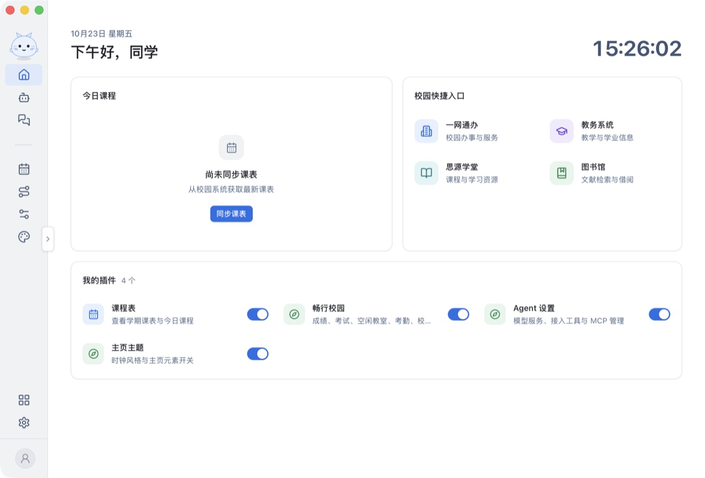
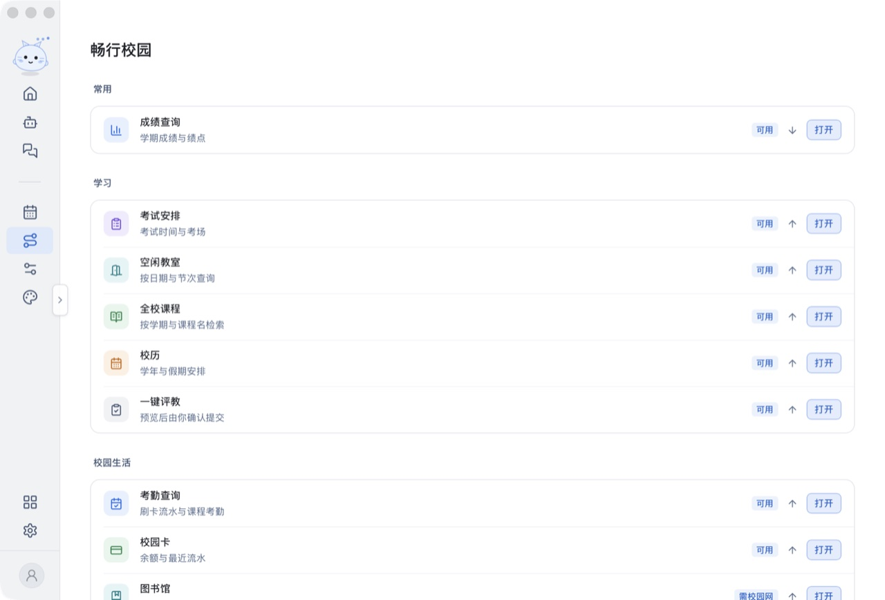

一处登录
密码、短信验证码、扫码三种方式；多账号保存，WebVPN 自动回退，凭据只存在本机。
课表、成绩、考勤、校园卡、思源学堂、评教和图书馆。Rust 直接对接校园协议，凭据只留在你的电脑上。

为什么是原生客户端
密码、短信验证码、扫码三种方式；多账号保存，WebVPN 自动回退，凭据只存在本机。
今日课程与完整学期课表，按周切换；成绩、考试、考勤、校园卡、空闲教室一页查完。
作业、学习资料、课程回放、讨论按类型切换；附件可另存，录播课直接取回放地址。
用自然语言查询校园数据；改课表、交作业、评教都会先给出预览，你同意后才执行。
打开 MCP 模式后，Claude Code 等编程 Agent 可以在本机直接调用同一批校园工具。
课表、畅行校园、主页主题以插件形式出现；应用更新带签名校验，可更换镜像源。

畅行校园
打开就知道今天几节课、哪个作业快截止、考勤有没有异常。切换账号时旧窗口立即关闭，缓存按账号隔离。
安装
系统提示不代表安装包损坏。可以用官网公布的 SHA256 核对文件后再打开。